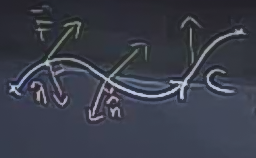
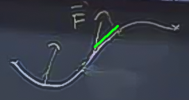
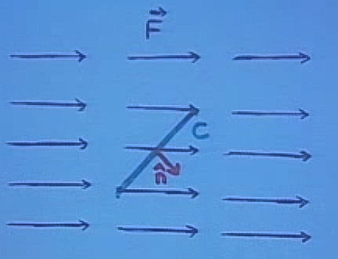
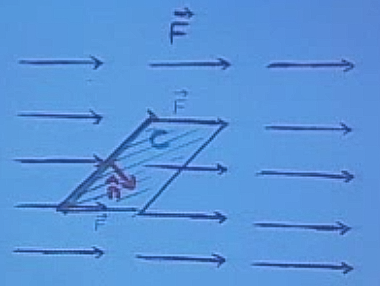
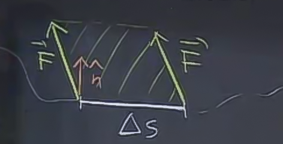
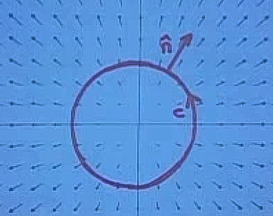
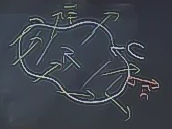
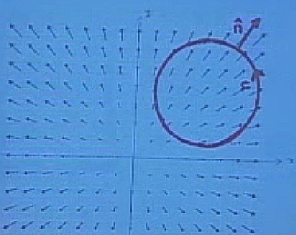

Ders 23
Akış (Flux)
Aslında akış çizgisel entegrallerin değişik bir şeklidir. Diyelim ki $C$ kapalı eğrisi ve $\vec{F}$ vektör alanı var, o zaman $C$ üzerinden $\vec{F}$'in akışı
$$ \int_C \vec{F} \cdot \hat{n} \mathrm{d} s $$
olarak gösterilir. Şimdi bu entegral içindeki öğelerin ne olduğunu tarif edelim.

$\hat{n}$ = $C$ eğrisine dik olan birim normal vektördür, $\vec{T}$'ye 90 derece saat yönünde diktir. Saat yönünde dedik çünkü mesela üstteki resimde en soldaki $\hat{n}$ yukarı da işaret ediyor olabilirdi, onu değil, aşağı doğru gideni seçtik.
Entegral neyi hesaplar? Eğri üzerindeki her noktada, vektör alanı ile aynı eğrinin normalleri ile yapılan çarpımların toplamını. Yani $C$'yi en ufak parçalar $\Delta s$'lere ayırınca akış
$$ \lim_{\Delta s \to 0} \bigg( \sum \vec{F} \cdot \hat{n} \Delta s \bigg) $$
olur. Bu kavramı daha önce hesapladığımız "yapılan iş" karşılaştırmak gerekirse
$$ \int_C \vec{F} \cdot \mathrm{d}\vec{r} = \int_C \vec{F} \cdot \vec{T} \mathrm{d} s $$
İşi hesaplarken her noktada $\vec{F}$'in eğri $C$'nin teğetine yansımasını hesaplıyorum.

Yani eğri üzerinde hareket ederken "$\vec{F}$ ile ne kadar birlikte, ne kadar ona ters şekilde" hareket edildiğinin hesabını yapılan iş veriyor.
Kıyasla akış hesabı, eğri üzerinde hareket ederken $\vec{F}$'in eğrinin "ne kadar içinden geçtiğinin" hesabı. Rüzgarlı bir havada bir yolda yürüyorum, akış rüzgarın bana ne kadar yandan çarptığını gösteriyor. Akış hesabı bu çarpış sağa doğru olunca onu pozitif, sağa doğru olunca onu negatif olarak hesaplar.
Yani yapılan iş $\vec{F}$'in teğetsel bileşenlerinin, yansımasının toplamı ise, akış $\vec{F}$'in normal bileşenlerinin toplamıdır. Bu ufak fark haricinde bu iki hesap birbirinin aynısıdır. Yani fiziksel anlamları çok farklı olabilir fakat matematiksel anlamda ikisi de bir çizgisel entegral, ve hesaplanışları, tanımları birbirine benzer.
Anlatım bağlamında iş hesabı için $\vec{F}$'i bir kuvvet alanı olarak görmek anlatımı rahatlatıyor ($\vec{F}$ başka bir şey de olabilir). Akış bağlamında $\vec{F}$'i bir hız alanı (velocity field) olarak görmek benzer bir rahatlık sağlıyor.
Bir sıvıyı düşünürsek, akış birim zamanda $C$'nin içinden ne kadar sıvının geçtiğini gösterir. Diyelim ki böyle bir alan alttaki gibi

Alan bir sabit alan, ama herhangi bir alana yeterince zoom edersek, o zaman görüntüsünün üstteki gibi olacağını düşünebiliriz. Şimdi bu alan içinde $C$'nin bir parçası $\Delta s$'i hayal edelim, ve birim zaman içinde bu alanın parçamız içinden geçişini hayal edelim [hoca iki saydam üst üste getirerek o parçayı oraya koydu, alanın geçişini göstermek için parçayı sola hareket ettiriyor, yani alanın sağa doğru geçişini görüyoruz].

Bu geçiş birim zaman içinde üstteki gibi bir şekil oluşturacaktır, bu şekil bir paralelogramdır. Paralelogramı daha iyi görebilmek için üstteki resmi alıp 90 derece sola çevirelim,

Alan hesabı için paralelogramın yüksekliği lazım, $\hat{n}$ bunun için gerekiyor.
$$ \textrm{Alan} = \textrm{baz} \cdot \textrm{yükseklik} $$
$$ = \Delta s \cdot (\vec{F} \cdot \hat{n} )$$
Tüm bu hesapları her parça için toplarsak akışı elde ederiz.
Yaklaşıksallığın bozulmaması için $\Delta s$'in oldukça küçük olması, ve zaman biriminin de ufak olması gerekir, mesela mikrosantim ile nanosaniye gibi, yoksa $\vec{F}$ sabit bir alan olarak görülemez.
Örnek
$C$ orijinde oturan $a$ yarıçapındaki, saat yönü tersinde bir çember eğri.
$$ \vec{F} = x\hat{i} + y\hat{j} $$
Geleneksel olarak saat yönü tersi, ve pozitif geçiş sağa doğru alındığı için bunun sonucu olarak alan kapalı eğriden "dışarı" çıkmış olur.

Bir çemberde olduğum için normal sürekli çembere tam dik konumda, ve $\vec{F}$'e sürekli paralel. O zaman
$$ \vec{F} \cdot \hat{n} = |\vec{F}||\hat{n}| $$
Fakat $\hat{n}$ birim vektör olduğu için uzunluğu 1, o zaman
$$ = |\vec{F}| $$
Bu vektör alanının büyüklüğü nedir? Yani alanın her $x,y$ noktasındaki vektörün büyüklüğü (magnitude) nedir? Vektör büyüklüğü karelerin toplamının kareköküdür, $\sqrt{x^2 + y^2}$, ki bu büyüklük orijinden olan uzaklığa eşittir. O zaman orijinde oturan çember üzerinde isek, uzaklık çemberin yarıçapına eşittir, yani $a$. Yani üstteki formül şöyle olur
$$ \vec{F} \cdot \hat{n} = |\vec{F}| = a$$
Çizgi entegrali bayağı kolay o zaman
$$ \int_C \vec{F} \cdot \hat{n} \mathrm{d} s = \int_C a \mathrm{d} s = a \cdot \textit{C'nin uzunluğu} $$
C'nin uzunluğu $2\pi a$ olduğuna göre
$$ = 2\pi a^2 $$
Bu büyüklünk beklenebileceği üzere pozitif, çünkü akış çemberden dışarı doğru.
Örnek
Aynı $C$ ama değişik $\vec{F}$ (bizim diğer favori vektör alanımız),
$$ \vec{F} = < -y,x > $$
Fakat burada vektörler her zaman çembere teğet, o zaman o vektörlerin dik bileşeni olamaz, yani sıfır olur. Burada akış olmadığını çıplak gözle bile görebiliyoruz. $\vec{F} \cdot \hat{n} = 0$, o zaman akış = 0.
Tabii ki hesabı yapmak için geometri her zaman yardım edemeyebilir, her durumda işleyecek bir metot gerekli, aynen iş hesabını yaptığımızda $M \mathrm{d} x + N \mathrm{d} y$ hesabını yaptığımız gibi. Akış hesabında benzer bir yaklaşım var.
Bileşenleri Kullanarak Hesap
Hatırlarsak iş hesabında
$$ d\vec{r} = \vec{T} \mathrm{d} s = < \mathrm{d} x, \mathrm{d} y > $$
olmuştu. O zaman düşünelim, üstte $\vec{T} ds$ kullandık, burada onun yerine $\hat{n} \mathrm{d} s$ var, onu nasıl temsil edebiliriz?
$\hat{n}$ aslında $\vec{T}$'nin saat yönünde 90 derece döndürülmüş hali değil midir? O zaman
$$ \hat{n}ds = < \mathrm{d} y,-\mathrm{d} x > $$
Dönüş saat yönünde olduğu için eksi işaret $dx$ önünde.
Demek ki $\vec{F} = < M,N >$ için
$$ \int_C \vec{F} \cdot \hat{n} \mathrm{d} s = \int_C < M,N > \cdot < \mathrm{d} y,-\mathrm{d} x > = \int_C -N \mathrm{d} x + M \mathrm{d} y $$
Gerisi iş hesabında gördüğümüz gibi. $x,y$ birbiriyle alakalı, çoğunlukla üçüncü bir değişken $t$, $\theta$, vs gibi, üstteki formülü bu ortak değişken çerçevesinde tekrar yazıyoruz, sonra entegrali çözüyoruz.
Peki Green'in Teorisi'nde yaptığımızı burada da yapabilir miyiz? Yani çizgi entegralinin yerine bir çift entegral geçirmek. Cevap evet, akış hesabı için de işleyen Green Teorisi'nin bir versiyonu var.
Akış İçin Green Teorisi
Eğer $C$ bir $R$ alanını çevreliyorsa ve yönü saat yönü tersinde ise, ve $\vec{F}=< P,Q >$ $R$ içinde her yerde türevi alınabilir ise, o zaman
$$ \oint_C \vec{F} \cdot \hat{n} \mathrm{d} s = \int \int_R \mathrm{div} \vec{F} \mathrm{d} A $$
$div$ kelimesi uzaklaşım (divergence) kavramından geliyor ve formülü şöyle:
$$ \mathrm{div} < P,Q > = P_x + Q_y $$
Bu hesabı hatırlamak $curl$ formülünü hatırlamaktan daha basit aslında, $x,y$ üzerinden kısmi türevler alınıyor ve bu türevler normal $P,Q$ sırası üzerinde uygulanıyor, sonuç toplanıyor.

Akış hesabı, o zaman, $C$ içinden geçerek $R$'den dışarı çıkan akış hesabıdır. Üstteki resimde mesela $C$'nin sağ kısmina etki eden $\vec{F}$ pozitif etki ederler, sol kısmındakiler negatif olurlar (içeri giriyorlar) ve bunların toplamı tüm akışı verecektir.
Bu formüle "normal formdaki Green Teorisi" ismi de veriliyor. İş hesabı için olan anormal (!) olduğu için değil tabii, sadece o form teğetsel, buradaki normal.
İspat
Şunu ispat etmeye çalışıyoruz
$$ \oint_C -Q \mathrm{d} x + P \mathrm{d} y = \int \int_R (P_x + Q_y) \mathrm{d} A \qquad (1) $$
Bu formülü bir önceki derste kullandığımız ispattaki forma indirgemeye uğraşalım. Cebirsel olarak sol kısmi şöyle görelim
$$ \oint_C \underbrace{-Q}_{M}dx + \underbrace{P}_{N}dy $$
Yani
$$ M = -Q $$
$$ N = P $$
Önceki dersten biliyoruz ki
$$ \oint_C M \mathrm{d} x + N \mathrm{d} y = \int \int_R (N_x - M_y) \mathrm{d} A \qquad (2) $$
Şimdi (1) içindeki $P_x$ ve $Q_y$ nedir, onları bulalım.
$$ P_x = N_x $$
$$ Q_y = -M_y $$
Bunları (1) içinde yerine koyarsak (2) formülünü elde ettiğimizi görürüz. Demek ki Green Teorisi'nin bu formu eskisi ile ilintili ve doğru.
Örnek
Önceki örnek ile aynı vektör alanı, ama bu sefer geometrik değil cebirsel çözüm kullanacağız.
$$ \vec{F} = x\hat{i} + y\hat{j} $$
Eğri $C$ bir çember ve yarıçapı $a$.
Önce $\mathrm{div} \vec{F}$'i hesaplamak lazım.
$$ \mathrm{div} \vec{F} = \frac{\partial }{\partial x}(x) + \frac{\partial }{\partial y}(y) = 1 + 1 = 2 $$
$$ \oint_C \vec{F} \hat{n} \mathrm{d} s = \int \int_R 2 \mathrm{d} A = 2 \int \int_R \mathrm{d} A = 2 \cdot \textit{R'nin alanı} $$
$$ = 2\pi a^2 $$
Bu daha önce bulduğumuz sonuç ile aynı.
Peki ya $C$ orijinde değil başka bir yerde olsaydı? Mesela

Çizgi entegralını hesapladığımız durumda bu çemberin parametrizasyonunu bulup, o noktadaki vektör alanı ile etkileşimini hesaplardık, vs. ve işler uzardı. Ama Green'in Teorisine bakarsak orada çemberin merkezinin nerede olduğuyla alakalı hiçbir varsayım yok. O zaman $C$ nerede olursa olsun sonuç her zaman $2\pi a^2$ çıkacak.
Şimdi genel bir soruya gelelim.
Uzaklaşım yani $div$ neyi ölçer? $curl$'un rotasyonel bir hesap yaptığını biliyoruz.
1) $div$ akışın ne kadar "yayıldığını", "genişlediğini" ölçer diyebiliriz. Mesela çemberli örnekte her şey dışarı çıkıyor, bir genişleme var, $div$ pozitif. Eğer akış tersine olsaydı (her şey içeri doğru) o zaman $div$ negatif olurdu.
2) Kaynak sağlama oranı, yani birim zamanda, birim alanda bir alandan, mesela ne kadar sıvının dış sisteme "çıktığı", "eklendiği". Mesela üstteki örnekte $bdiv \vec{F} = 2$ demek, bu alandan dış sisteme sürekli sıvı ekleniyor, sıvı dışarı çıkıyor anlamına gelir.
Yukarı